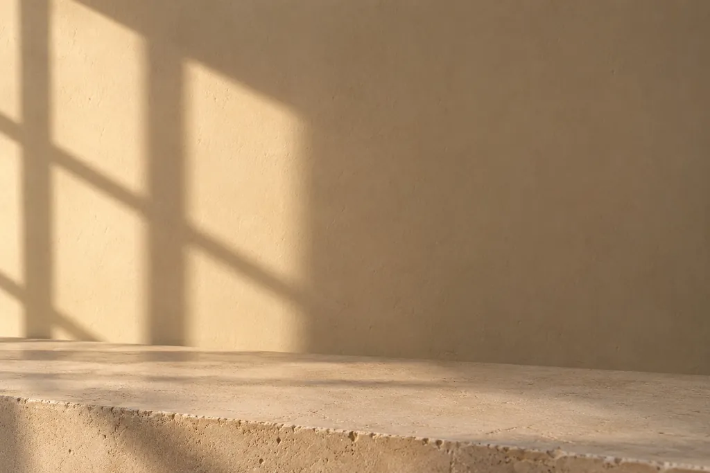

آزمونهای خودشناسی
هفت تا آزمون بر پایهی چارچوبهای شناختهشدهی روانشناسی. بدون ثبتنام؛ جوابهات فقط تو مرورگر خودت میمونه. اینا ابزار خودشناسیان، نه تشخیص.
آزمونها رو ببین
کار اصلی ما گروهدرمانیه؛ حضوری، دور هم، تو یه اتاق.

ما کی هستیم
چند تا کار مختلف میکنیم و همه رو یه جا نگه داشتیم. ولی اگه قرار باشه فقط یکیش رو بگیم، گروهدرمانیه.

گروهدرمانی
هر شیشه یه رنگ؛ با هم، یه نور.
تو درمان فردی از رابطههات تعریف میکنی. تو گروه، رابطهها همونجا ساخته میشن؛ با آدمهایی که تا دیروز نمیشناختیشون. همون الگویی که بیرون تکرار میکنی اینجا هم پیدا میشه، با این فرق که این بار یکی هست که بهت بگه داره اتفاق میافته.
و یه چیز سادهتر: میشنوی یکی دیگه دقیقاً همون جملهای رو میگه که فکر میکردی فقط تو سر خودته.
گروهها حضوریان، تو یه اتاق؛ و خیلی از چیزایی که اونجا اتفاق میافته تو حرفها نیست:
یه نگاه، یه سکوت، یکی که کنارت نشسته.


یه جلسه
هیچکس پا تو اتاقی نمیذاره که نمیتونه تصورش کنه.
اتاق، چند دقیقه قبل از اینکه همه بیان.
گروه دور هم میشینه و جلسه باز میشه. هیچکس تکلیف نداره و نوبت اجباری هم در کار نیست.
هر کی هر چی آورده میذاره وسط. بقیه واکنش نشون میدن؛ نه نصیحت، بلکه اینکه اون حرف باهاشون چی کار کرد.
جلسه بسته میشه. هر چی گفته شد تو همون اتاق میمونه؛ این تنها قانونیه که سرش شوخی نداریم.

رایجترین ترس همینه و سادهترین جواب رو داره: خیلیا چند جلسهی اول فقط گوش میدن. گوش دادن هم بخشی از کاره، نه غیبت ازش. هر وقت خواستی، حرف میزنی.
قبل از اینکه بپرسی
اینا رو از کسایی شنیدیم که قبل از اومدن پرسیدن. اگه نگرانی تو اینجا نیست، بپرس.

قبل از اومدن، یه گفتوگوی جدا با درمانگر داری. یکی از کارای همون گفتوگو همینه: اگه احتمال آشنایی باشه، یه گروه دیگه برات در نظر گرفته میشه.
هیچجا. جلسهها ضبط نمیشن و همهی اعضا اول کار سر رازداری توافق میکنن. این فقط یه عرف اخلاقی نیست؛ شرط عضویته.
پیش میاد، برای خیلیا، و هیچکس اونو یه اتفاق عجیب نمیبینه. اتاقی که توش نتونی گریه کنی، اتاق درمان نیست.
گروهها یه دورهی مشخص دارن که قبل از شروع بهت گفته میشه. تعهد بیپایان از کسی نمیخوایم؛ ولی چند جلسهی اول رو میخوایم، چون یه گروه تو جلسهی اول شکل نمیگیره.
نه همیشه. برای بعضیا کافیه، برای بعضیا کنار درمان فردی میشینه، و تو بعضی موقعیتها انتخاب درستی نیست. تو همون گفتوگوی اول رک بهت میگیم.

چون نگه کردند آن سی مرغ زودبیشک این سی مرغ آن سیمرغ بود
عطار، منطقالطیر
سی تا مرغ راه افتادن که سیمرغ رو پیدا کنن. آخر راه فهمیدن سیمرغ خودشونن.
کنار گروهدرمانی
هفت تا آزمون بر پایهی چارچوبهای شناختهشدهی روانشناسی. بدون ثبتنام؛ جوابهات فقط تو مرورگر خودت میمونه. اینا ابزار خودشناسیان، نه تشخیص.
آزمونها رو ببین
چی کار میکنید، برای کیا، و چطور میشه همراه شد.

هر کار دیگهای که باید اینجا دیده بشه. یه عنوان و دو خط توضیح کافیه.

از کجا شروع میشه
یه قدم، بعد یکی دیگه.
یه جلسهی کوتاه با درمانگر. میگی چی تو ذهنته و هر چی خواستی میپرسی.
بر اساس همون گفتوگو، گروهی پیشنهاد میشه که بهت بخوره.
میشینی و گوش میدی. هیچکس تو جلسهی اول ازت چیزی نمیخواد.
کی گروهها رو میگردونه
برای همین این بخش نمیتونه کلی باشه: اسم، تحصیلات، پروانه، و اینکه چند ساله گروه میگردونه.
نام، مدرک و رشته، شمارهی پروانه، سابقهی کار با گروه، و دو خط به زبون خودش. یه عکس ساده هم بذارید؛ تو این صفحه از هر تصویر دیگهای بیشتر کار میکنه.
اگه گروهها رو بیشتر از یه نفر میگردونن، همین قالب برای هر کدوم تکرار میشه.
تماس
لازم نیست بدونی چی میخوای تا بتونی سؤال کنی.
شمارهی واتساپ یا تلگرام، ایمیل، و شهر و محلهی جایی که گروهها برگزار میشن. تا شمارهای که واقعاً جواب میده رو نگیرم، اینجا چیزی نمیذارم.